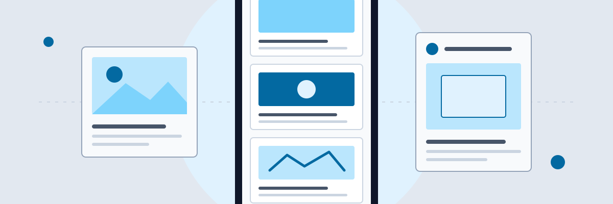
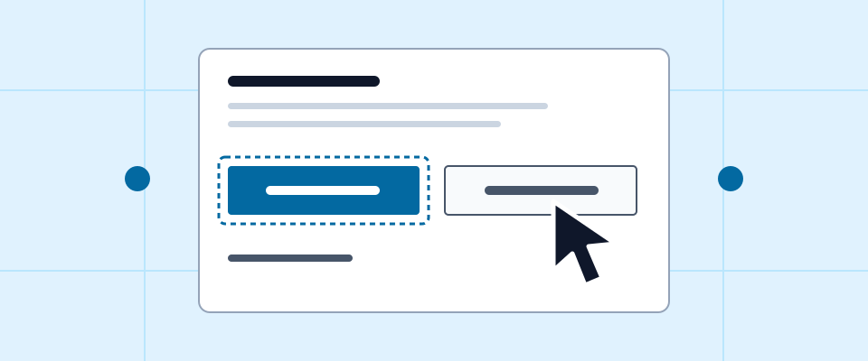
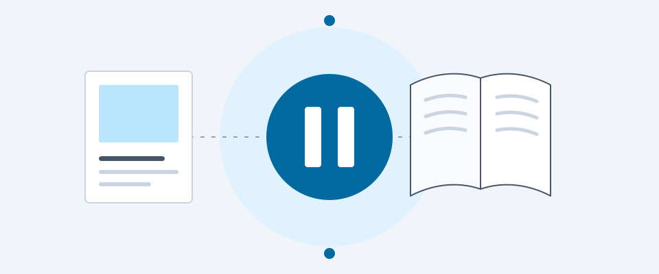

Digital culture
The design of everyday scrolling
Start with the story behind the feed and the choices that shape it.
Read feature: The design of everyday scrollingTechnology / Design / Culture
Issue 01 / Digital life

Digital culture
Start with the story behind the feed and the choices that shape it.
Read feature: The design of everyday scrolling
Design
Explore buttons, spacing and recommendations as deliberate design choices.
Read this section: The role of interface cues
Culture
Consider the place of deliberate choices in a connected routine.
Read this section: Designing with intention